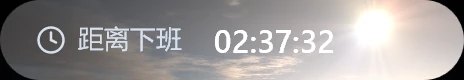
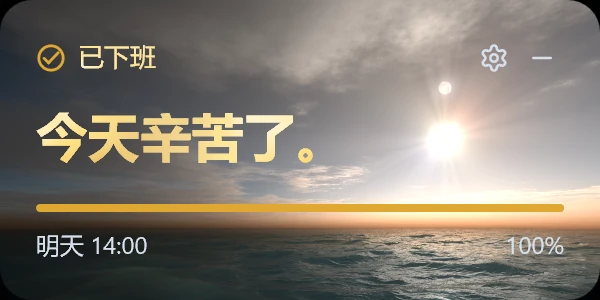
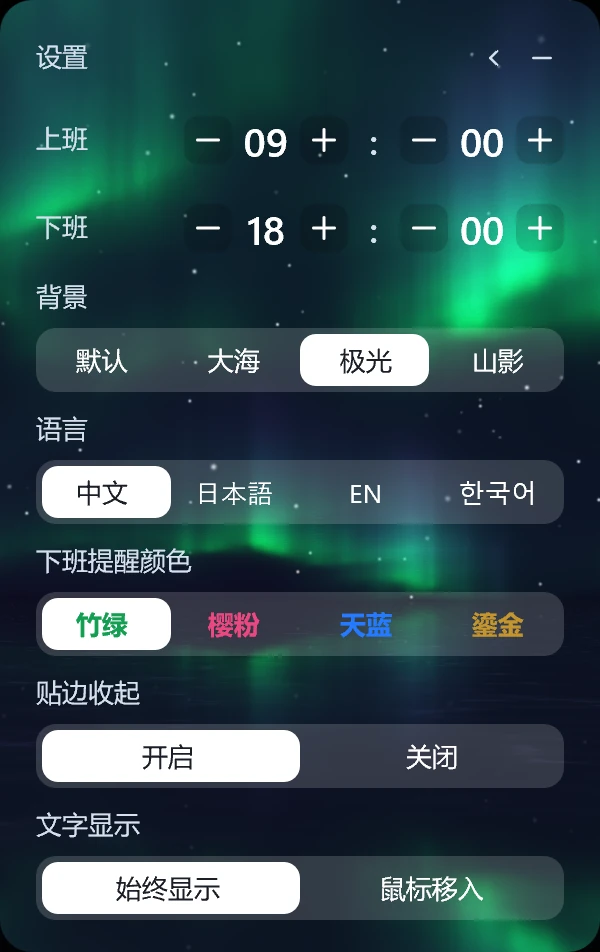

抬眼就知道
大号数字，不用点开，也不用凑近。剩下的时间，一眼就看见。
它不统计你的效率，也不提醒你努力。只是把还剩多久，安静地放在桌面上。
没有账号，没有推送，没有多余的面板。
大号数字，不用点开，也不用凑近。剩下的时间，一眼就看见。
拖到屏幕边缘，它会收成一条。鼠标靠近，再滑出来。平时就安静地待在角落里。
四种背景，四种语言，四种下班提醒色。都藏在右上角的齿轮里。
默认、大海、极光、山影。
换一个背景，像换一扇窗。
点一下，看看另一种天色。
拖到屏幕边缘，它会收成一条。鼠标靠近，再滑出来。平时就安静地待在角落里。

没有弹窗，也没有提示音。数字停下来，换成一句「今天辛苦了」。
然后，明天见。

上下班时间、背景、语言、下班提醒色。没有账号，没有同步，改完就存在本机。
点右上角的齿轮，随时改。

没有隐藏的条款，也没有需要注册的东西。
不需要。下载一个 exe，双击打开。设置只存在本机，删掉文件就干净了。
Windows 10 和 Windows 11，64 位。更老的系统没有测试过。
程序没有代码签名。点「更多信息」再点「仍要运行」即可。完整源码在 GitHub，也可以自己构建。
点卡片右上角的齿轮，用加减号调整。设置保存在 %APPDATA%\OffWorkCountdown\schedule.txt。
它在最上层，但可以拖到屏幕边缘收起来，鼠标靠近再出现。也可以在设置里关掉贴边收起。
是。镜像通过 Cloudflare 转发同一个 GitHub Release 文件。如果不放心，可以从 GitHub 下载。
不会。程序没有联网功能，设置只存在本机。
可以。中文、日本語、EN、한국어，在设置里切换。